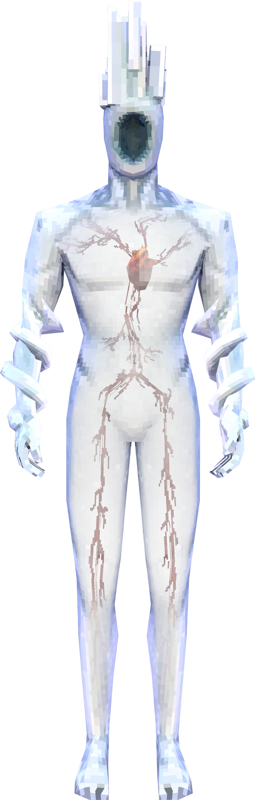
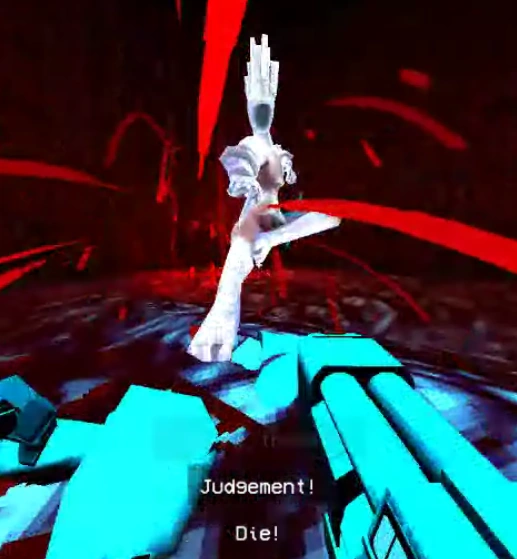

Appearance
Minos Prime is a pale bluish-white translucent humanoid figure with a visible circulatory system and heart. He has two snakes wrapped around his arms, a hole in his face, and a cubical crown fused to his head. He emits a perpetual bright blue glow, adding an ethereal aura to his intimidating presence.

Combat and Behavior
Minos Prime is an incredibly powerful enemy, capable of chaining attacks to destroy V1 in seconds. Prime Souls, including Minos Prime, have a stamina system dictating their attack frequency. Minos Prime has:
- Phase 1: 6 Stamina (10 on Violent).
- Phase 2: 12 Stamina (infinite on Violent and above).
If his stamina runs out, he is unable to attack for 2 seconds. Parrying restores 5 stamina to him.
Attack Patterns
Phase 1
- "Judgement!" – Dash attack followed by a dropkick explosion. Can be parried (except in Violent Phase 2).
- "Die!" – A slam attack creating a ground shockwave, cancelable by hitting walls or ceilings.
- Serpent – A homing projectile. Parryable, useful for health and damage.
- "Prepare thyself!" – Kick combo ending with a Serpent attack.
- "Thy end is now!" – 4-punch combo with the last hit being parryable (not in Violent Phase 2).
- Uppercut – Teleports and launches V1 into the air.
- Overhead – A straight-down teleport attack.
Phase 2
Triggered below 65 health. Minos Prime gains blue flames and yells "WEAK." Changes include:
- Increased aggression and speed.
- Explosion from "Judgement!" persists even when parried.
- Only Serpent is parryable on higher difficulties.

Difficulty Adjustments
Minos Prime's behavior changes based on difficulty:
- HARMLESS/LENIENT: Smaller shockwaves and slower attacks. No extra stamina in Phase 2.
- STANDARD: 6 stamina in Phase 1, 12 stamina in Phase 2.
- VIOLENT: Unlimited stamina in Phase 2. "Judgement!" and "Thy end is now!" unparriable in Phase 2.
- BRUTAL: Highly varied attack patterns and frequent Serpent attacks in Phase 2.
Strategies
General Tips
- Stay grounded; avoid airborne maneuvers unless necessary.
- Circle-strafe and dash to evade most attacks.
- Parry attacks where possible, especially Serpents.
- Use coin tricks (e.g., Railcoin-punching) during the pre-fight cutscene for massive damage.
Effective Weapons
- Sharpshooter Revolver: Great for dealing precise damage and destroying Serpents.
- Pump Shotgun: Use charge shots during predictable attack windows for massive damage.
- Screwdriver Railcannon: Embed early for continuous healing and damage.
- Rocket Launcher: High burst damage; aim for airshots during Minos Prime's aerial attacks.
Key Avoidance Techniques
Most attacks have clear telegraphs. Learn timing for:
- "Judgement!": Dash moments after teleporting to avoid explosion.
- "Die!/Crush!": Dash sideways and jump to avoid shockwaves.
- Serpent: Parry or bait into walls.
Preparation and Mentality
Defeating Minos Prime requires patience and practice. Keep a cool head, stay hydrated (or energized with GFuel), and learn his patterns through repeated attempts. This is one of ULTRAKILL’s toughest challenges, so don’t expect to win on your first try. With determination, you can overcome.